Пятничное🥰
На этой странице вы можете ознакомиться со всеми выпусками пятниц (приглашений на созвон). Сайт доступен во всемирной сети интерет с любой ЭВМ (Linux версии ядра v0.01 - v6.7.6, MacOS 8 - 14.5, Windows XP, Windows Vista, Windows 7, Windows 8, Windows 10, Windows 11).
Первое приглашение 27 октября 2022
Кристина: Кто-нибудь хочет вместе пособирать пазл?
Второе приглашение 4 ноября 2022
Кристина: Хотите сегодня пазлы пособирать??
Третье приглашение 12 ноября 2022
Катя: котятки вы завтра вечером свободны?
Картинка It's Friday 18 ноября 2022
Кристина:
Пятое приглашение 24 ноября 2022
Кристина: Хей! Как насчёт того, чтобы созвониться сегодня?
Гифка It's Friday 25 ноября 2022
Кристина: 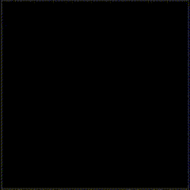
Гифка It's Friday Gartic 2 декабря 2022
Кристина: 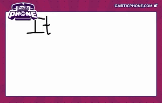
Договорились на предыдущем созвоне 4 декабря 2022
хзктохзчто
Картинка It's Friday с человечками 9 декабря 2022
Кристина: 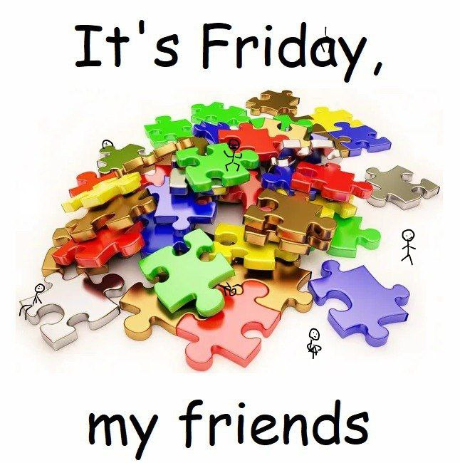
Картинка It's Friday повторка 16 декабря 2022
Кристина:
Картинка It's Friday переповторка 23 декабря 2022
Кристина:
Картинка It's Friday перепереповторка 30 декабря 2022
Кристина:
Первое приглашение от Петра 6 января 2023
Лена: Кто нибудь хочет завтра поболтать? Порисовать)
Первое приглашение от Лены 13 января 2023
Петр: а мы будем сегодня собираться ? 🤭🤭
Второе приглашение от Лены 20 января 2023
Лена: мы будем сегодня собираться?
Внезапное приглашение от Петра 27 января 2023
Петр: просто начал видеозвонок (кринж)
Ну че 10 февраля 2023
Петр: Ну че го сегодня в крокодила
Внезапное «го в крокодила» 17 февраля 2023
Петр: Го в крокодила через 20 минут
Конкретная дата 25 февраля 2023
Кристина: Как насчёт созвониться завтра (26.02) в 3-4 часа дня по клд??
Конкретное время 11 марта 2023
Петр: Го завтра созвонимся в 15 (21 по времени Кристины (14 по времени Лены))
Что насчёт 18 марта 2023
Кристина: Что насчёт завтра в 3 по клд созвониться??
Да, хотим! 25 марта 2023
Лена: хотите завтра созвониться??
Конечно, хотите, что за вопросы! (никто не пришел 💀) 31 марта 2023
Лена: хотите завтра вечером созвон?
Исправляемся 2 апреля 2023
Петр: Я считаю что нужно исправлять ситуацию и позвониться. Лайкните это сообщение кто сможет завтра (сегодня) в 19:00 и не проспит
Не смогли из-за ночи дфм 14 апреля 2023
Кристина: Ой
Кристина: Сегодня же пятница!
Кристина: Кто-нибудь хочет созвониться??
Возвращение Лены 11 мая 2023
Лена: я сегодня возвращаюсь домой, что на счёт того, чтобы на неделе созвониться?
Что насчёт 2 18 мая 2023
Кристина: Что насчёт созвониться завтра??
Будем 26 мая 2023
Лена: мы не будем сегодня созваниваться ? :(
Хотите! 9 июня 2023
Лена: а не хотите сегодня - завтра созвониться?
Повторюшка - дядя хрюшка 16 июня 2023
Петр: а не хотите сегодня - завтра созвониться?
Тридцать первое приглашение 24 июня 2023
Лена: хочет кто-нибудь сегодня созвониться?
Повторюшка - дядя хрюшка 2 30 июня 2023
Петр: а не хотите сегодня - завтра созвониться?
Начинающий блогер 9 июля 2023
Петр: Ставь лайк, если хочешь созвониться сегодня в 5
В 5 созвон 22 июля 2023
Петр: В 5 созвон
Письмо 30 июля 2023
Петр: Всем доброе утро!
Надеюсь, у вас все отлично! Я хочу предложить вам замечательный способ провести время вместе. Давайте созвонимся сегодня в 6 часов вечера и пообщаемся несколько часиков.
Мы сможем поболтать, поделиться новостями и просто посмеяться. Также, предлагаю сыграть в какую-нибудь интересную онлайн-игру, чтобы добавить немного развлечения в нашу встречу.
Не забудьте подготовить свои чашки с кофе или чай, и убедитесь, что ваш интернет будет стабильным.
Буду рад видеть вас всех на нашем виртуальном созвоне! Надеюсь, что вы присоединитесь к нам.
До встречи в 6 часов!
Хз кто по итогу пришел 4 августа 2023
Кристина: Хотите сегодня созвонится?
Петр: Я сегодня не могу 😭
Петр: Го в воскресенье
Лена: да у меня на сегодня уже планы :(
Петр: В воскресенье в 5?
Кристина: Я в воскресенье скорее всего не смогу
Кристина: Но вы созванивайтесь 👌
Если хочется и можно 18 августа 2023
Петр: Сегодня кто хочет и может пазлы в 8
Го! 2 сентября 2023
Лена: го сегодня созвон в 6?
Без лишних слов 11 сентября 2023
Петр: пт в 20:00
Попросил искусанный интеллект (я не читал) 21 сентября 2023
Петр: Привет!
Хочу вас пригласить на созвон завтра в 8 часов по Калининградской области. Мы давно не слышались и, кажется, пора отдохнуть от повседневных забот и просто пообщаться.
Предлагаю немного поболтать, поделиться новостями и, конечно же, поиграть и порисовать вместе. Не важно, насколько ты талантлив в искусстве, веселье и вдохновение гарантированы!
Заранее подготовьте карандаши и бумагу, чтобы мы смогли порадовать друг друга своими творениями.
Будет прекрасно провести время в вашей приятной компании, поэтому не забудьте присоединиться к нашему созвону. Пусть этот вечер станет запоминающимся и сделает наши встречи более регулярными.
С нетерпением жду нашего созвона завтра в 8 часов!
С наилучшими пожеланиями,
Ваше имя
Кстати 28 сентября 2023
Катя: а завтра будет созвон?
Кристина: Кстати!
Кристина: Давайте!
Кристина: В 20 по клд
Детский рисунок 11 октября 2023
Петр: 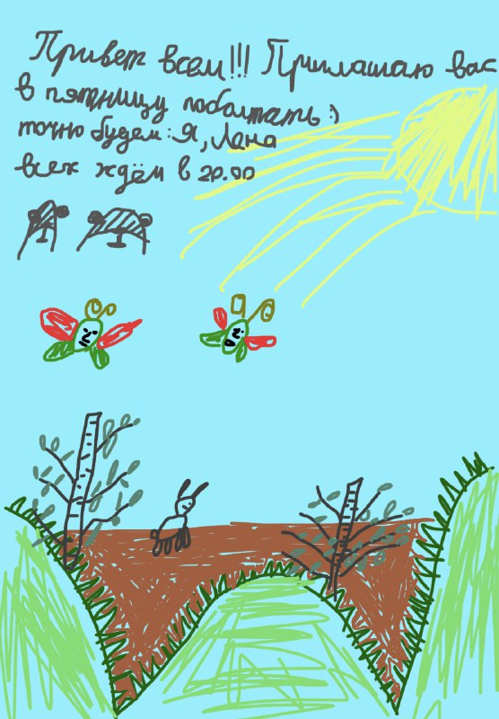
Го! 2 19 октября 2023
Петр: Го созвон в воскресенье
Го! 3 26 октября 2023
Петр: Завтра го в 20:00 созвон
Секс 1 ноября 2023
Петр: 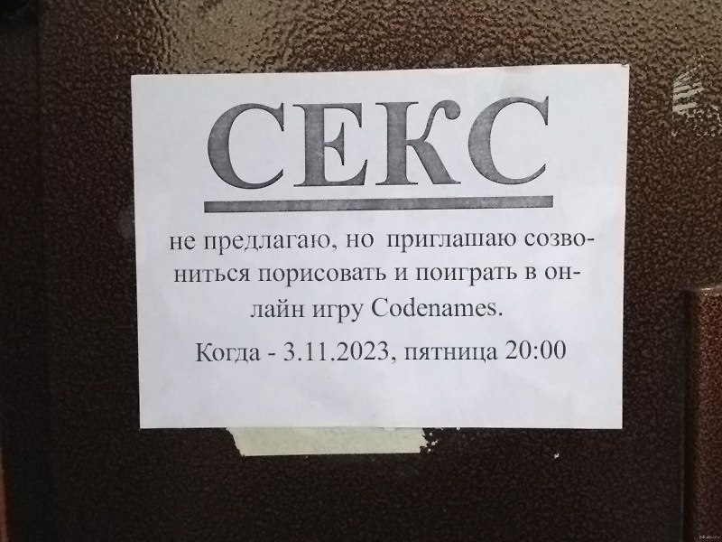
Краткость - сестра таланта 8 ноября 2023
Петр: П
Краткость - сестра 15 ноября 2023
Петр: ⌈ʔ
А чего не в пт? 22 ноября 2023
Петр: Созвон в субботу в 18?
Эмодзи 29 ноября 2023
Петр: 5️⃣🗓🕗👨💻🗣📰🧩🎮🎨
Прищурьте глаза 5 декабря 2023
Петр: 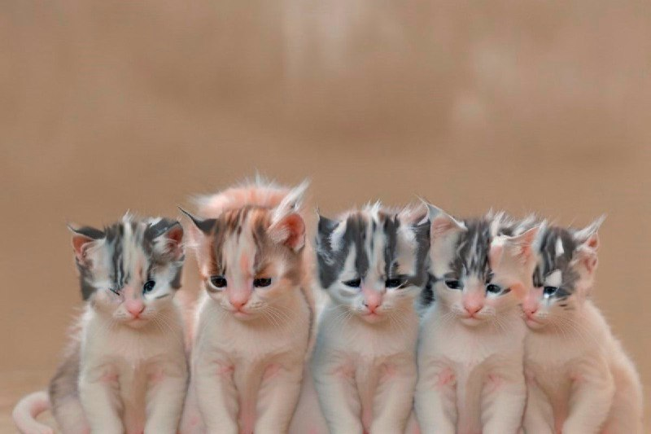
Неожиданный эвент в чате garem tg 12 декабря 2023
Кристина: просим всех на еженедельный созвон в пятницу!! Будет особое мероприятие под названием "Советская смекалка" 😉
Краткость 20 декабря 2023
Петр: ⌜.
Аналоговые часы и язык жестов 27 декабря 2023
Петр: 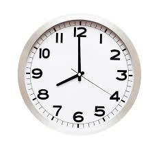
Азбука морзе 4 января
Петр: .--. .-.- - -. .. -.-. .- / ---..
Временная метка 9 января
Петр: timestamp 1705082400
Чипи чипи чапа чапа руви руви даба даба маджико ми дуби дуби бум бум бум бум 17 января
Петр:
3D-графика 23 января
Петр:
Котики 30 января
Петр:
Пианино 6 февраля
Лена:
Малюсенький котик на весах 13 февраля
Петр: 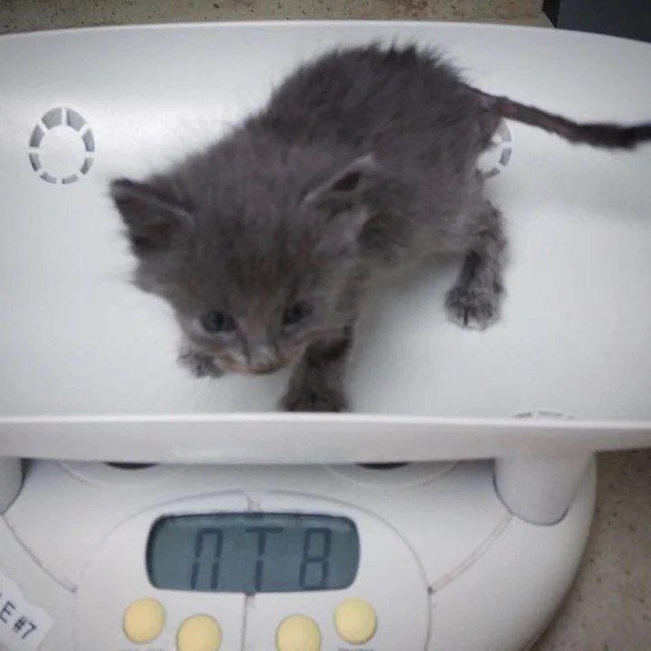
Котика придавило вафлей 20 февраля
Петр:
Игра Wordly 27 февраля
Петр:
Поезд отправляется 6 марта
Петр: 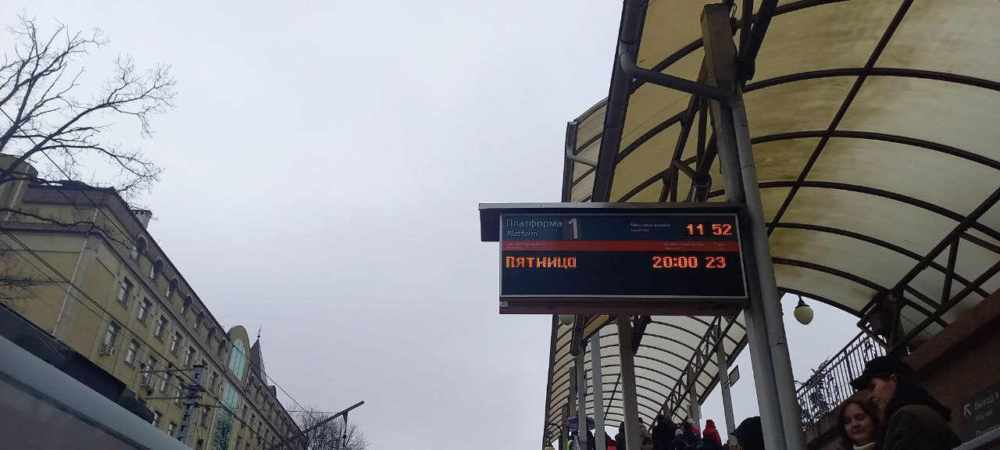
Буквица (очень по-христиански) 12 марта
Петр: 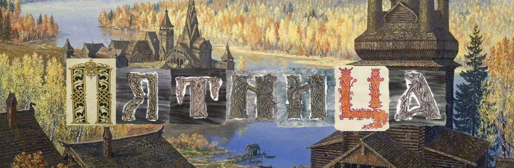
Adult swim 19 марта
Петр:
Интервью лягушки 27 марта
Петр:
Уроки стенографии 9 апреля
Петр: 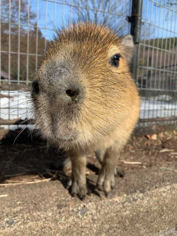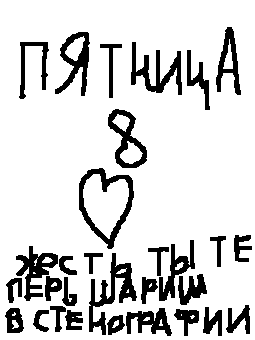
Urldecode 16 апреля
Петр: %D0%9F%D1%8F%D1%82%D0%BD%D0%B8%D1%86%D0%B0%208
Взломайте сайт 23 апреля
Лена: 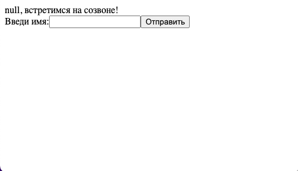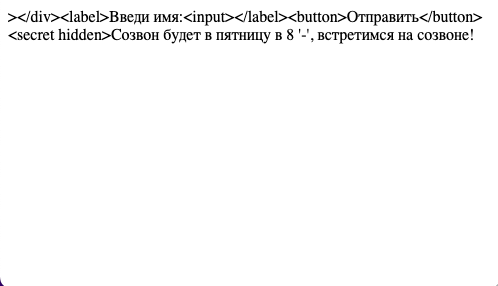
Желешки под действием гравитации 4 мая
Петр: 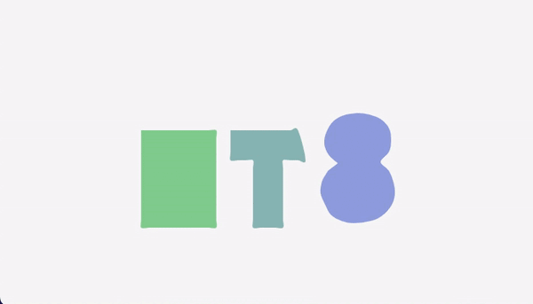
Рисуй чтобы проявить надпись 15 мая
Петр: 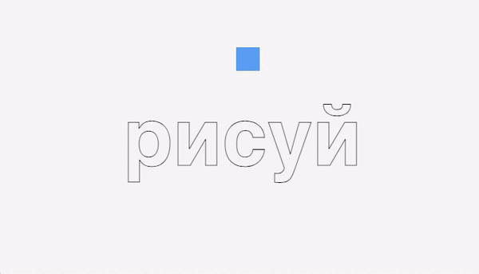
DVD но это ПТ8 30 мая
Петр: 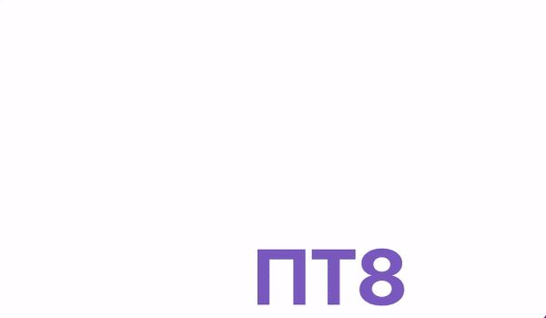
Караоке, сгенерированное на сайте Петра! 6 июня
Петр:
Я наконец-то собрал все пятницы! 12 июня
Петр: 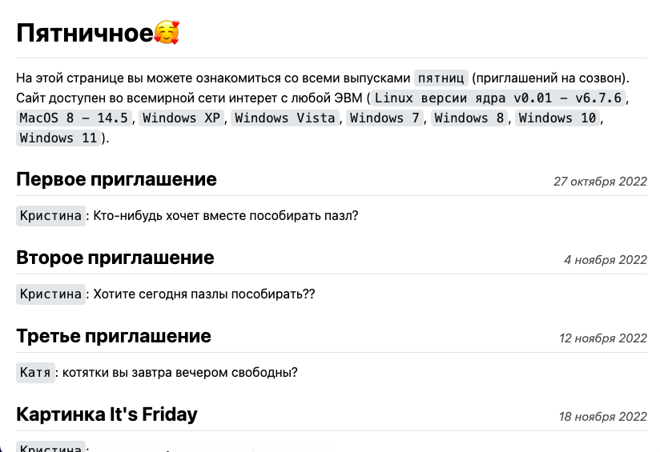
Flower language 18 июня
Петр: 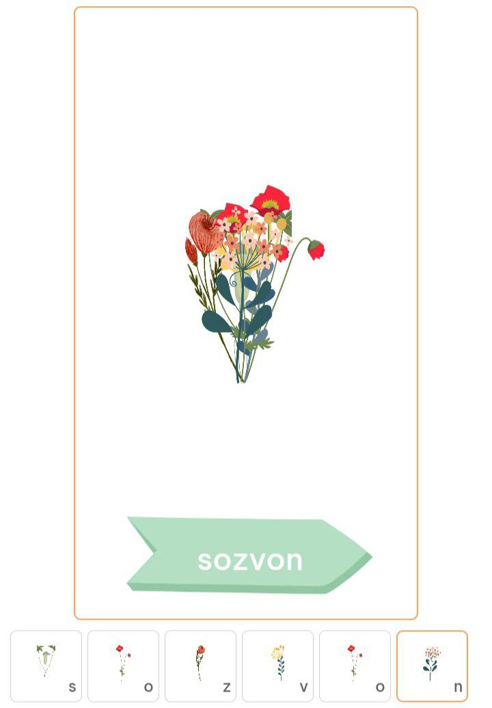

Преобразование Фурье 25 июня
Петр:
Бабочки 3 июля
Петр:
очень философски 8 июля
Петр: 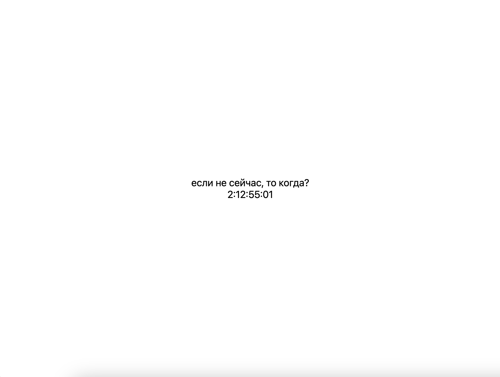
Это единственный день, когда мы можем использовать этот смайлик 17 июля
Лена: 📅+2
Дапстеп 23 июля
Петр: ПЯТНИЦА 8
Петр:
Да кто этот ваш календарь 30 июля
Петр:
Лена: августа*
кто-то вообще читает эти заголовки? 6 августа
Петр:
красивое, хз как еще назвать 12 августа
Петр:
Фисташки 20 августа
Петр: 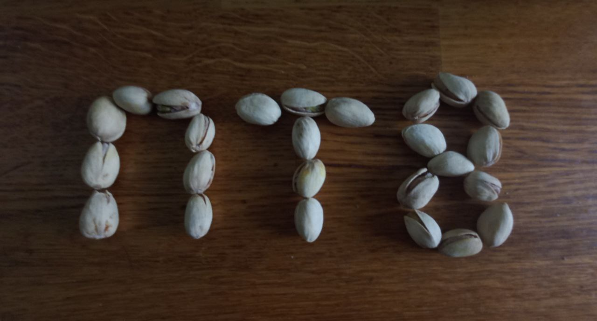
Португалия Ямайка Турция Норвегия Италия ЦАР Австрия 27 августа
Петр: 🇵🇹🇯🇲🇹🇷🇳🇴🇮🇹🇨🇫🇦🇹8
мда, договорились сделать сигну и забыли 6 сентября
Все: забыли про сигну
Вспомнили 11 сентября
Кристина: 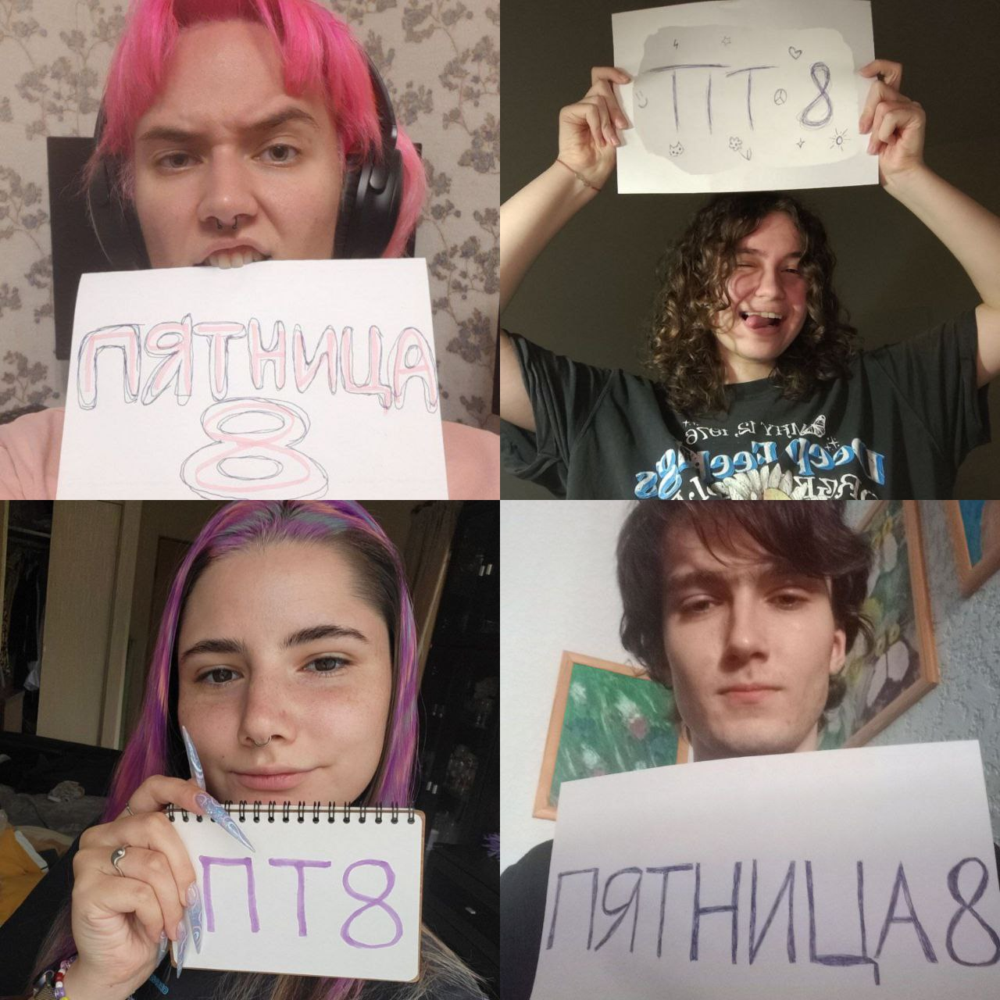
Тотально на созвон 17 сентября
Петр: 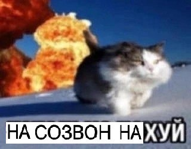
График функции созвона 24 сентября
Петр: 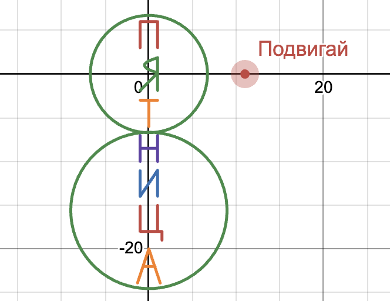
Ничего лучше не придумал 2 октября
Петр: https://pyotrpopov443.github.io/sozvon_all/